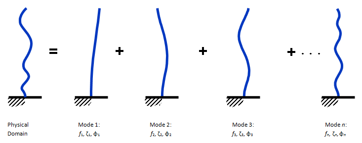
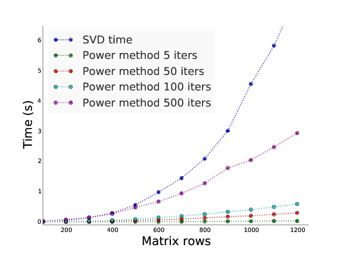

Distributed computing in sensor networks
James Long 1 Anupa Murali2 Zihao Wang 3
Civil Engineering
MIT
Harvard University
Harvard University
Background
- Mode shapes describe the dynamic response of mechanical systems to their environment
- Material properties (mass, stiffness, damping), can be inferred from these responses
- Changes in modal responses may indicate defects
Computation
Given time series $x(t)$ from $n$ sensor locations:
Compute $X_{n}(\omega)$ for each of the n locations
For a specific $\omega_i$ form $G_{n\times n}(\omega_i)$ where:
$G_{jk}(\omega_i) = X_{j}(\omega_i)\times X_{k}(\omega_i)^{*}$
Then decompose $G_{n\times n} = U_{n\times n} \Sigma_{n\times n} V^{*}_{n\times n} $
The first singular vector (column) of $U$ is the mode shape estimate
Motivation: Technology can overwhelm traditional algorithms
Example 1: high-res cameras can produce huge data sets (e.g one time series per pixel)
Motivation: Technology can overwhelm traditional algorithms
Example 2: Networks of wirelessly connected sensor devices
- Devices have built in accelerometers and microcontrollers
- Very low cost enables large scale, dense deployment
- Communication out of the network drains battery, and we are forced to perform computation on slow (100MHz), memory constrained (128kB RAM) devices
Approach & Secret Weapon
- Recall that we use only the first singular vector as an estimate of the mode shape
- Because our matrix is normal, we can use a power method to estimate the largest eigenvector (PageRank!)
Algorithm:
$i = 0$; init $v_{0}$
while $(i< N):$
$v_{i+1} = G v_{i} $
$v_{i+1} = \frac{v_{i+1}}{\lVert v_{i+1} \rVert} $ $i = i+1 $Approach & Secret Weapon
Rate of convergence: $\frac {\lambda_{1}} {\lambda_{2}} $
$\lambda_{1}$ is the largest eigenvalue, $\lambda_{2}$ the next largest
Results: Serial Comparison
1217 individual time series of length 1000

$\lambda_{1} = 3.9\times 10^{5}$; $\lambda_{2} = 1.2\times 10^{-9}$
Results: Serial Comparison
54 individual time series of length 180000